Claude Code 大型代码库实战：百万行代码怎么扛得住？
大家好，我是小林。
平时用 Claude Code 都是在自己的小项目上跑，舒坦得很。
可一旦放到「公司百万行级别的大代码库」这个场景下，所有问题立刻浮出来。
而这些问题，恰恰是 Anthropic 自己每天在解决的。
为了搞清楚官方到底是怎么应对的，我把 Anthropic 上周刚发的那篇专门讲大代码库实践经验的博客整篇扒了一遍，又翻了 Claude Code 创始人 Boris Cherny 分享过过的一些经验。
把这些一手信源串完之后，我把在大代码库里最容易踩的 7 个坑总结了出来：
- Q1：大代码库下 context 老爆，是不是模型太小了？
- Q2：CLAUDE.md 到底写多长合适？写了 1000 行 Claude 反而变笨？
- Q3：大代码库里让 Claude 找一个函数，总找错文件，怎么办？
- Q4：跨几十个文件的改动，Claude 总是改一半就崩，怎么救？
- Q5：团队里只有我一个人会用 Claude Code，怎么推广？
- Q6：Claude Code 创始人平时怎么用 Claude Code？
- Q7：什么样的项目其实不适合用 Claude Code？
我们一个一个来说。
Q1：大代码库下 context 老爆，是不是模型太小了？
不少人的第一反应是这个：「context 不够，那是不是该换更大模型？」
Anthropic 官方答案是：换模型没用，问题不在模型，在 Claude Code 怎么找代码。
你想啊，Opus 4.7 已经支持 1M token 了，换算下来两百多万字。但一个像样点的项目动辄几百万行代码，再算上依赖库就更夸张了。再大的窗口也塞不下整个代码库，这是物理上的事。
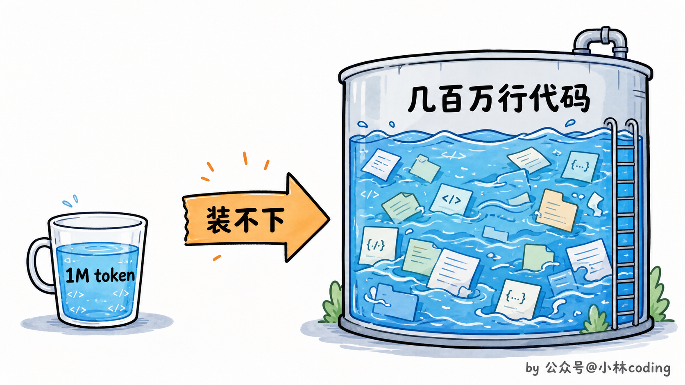
那 Claude Code 在大代码库下怎么解决「精准找到要改的那几行代码」的？
业内的主流答案是 RAG：把代码切片、做 embedding、塞向量数据库，要查的时候用相似度召回。Cursor、Copilot、Windsurf 走的都是这条路。
但 Claude Code 偏偏不走。它连 embedding 和向量数据库的影子都没有，就靠 grep、读文件、看目录这种最朴素的方式。
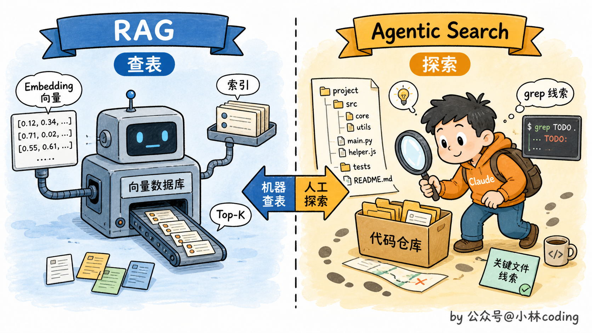
Anthropic 给这套办法起了个名字，叫 agentic search，翻译过来就是「让 Claude 像 agent 一样去搜」。
Claude 像一个真人工程师一样：先 ls 看根目录、再进 auth/ 看里面有啥、grep 一下「login」找到相关函数、再读 middleware.ts 和 session.ts，读一个文件决定下一步读什么，循环往复。
flowchart LR
A[收到任务] --> B[看目录]
B --> C[grep 找关键字]
C --> D[读相关文件]
D --> E{够了吗?}
E -->|不够| C
E -->|够了| F[动手改]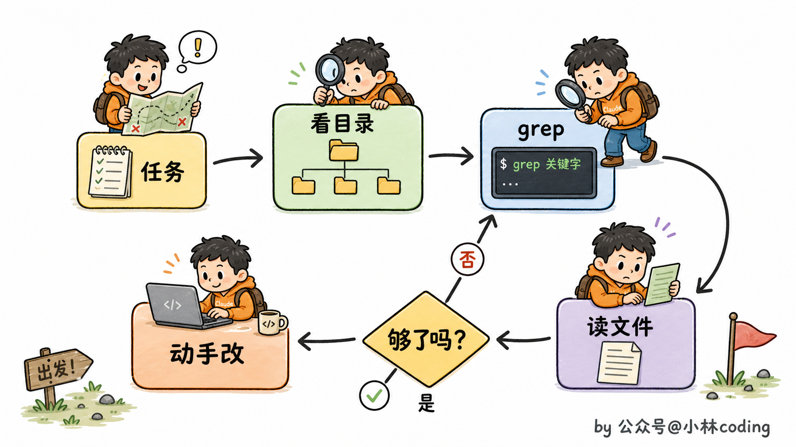
为什么 Anthropic 选这个反主流的路线？官方博客给了三个理由。
第一，索引会过期。千人团队每天提交几百个 commit，embedding pipeline 根本跟不上。等你查的时候，索引里返回的可能是两周前已经被重命名的函数。Claude 拿着过期信息推理，代码自然就崩了。agentic search 每次都基于当下的代码，没有这个问题。
第二，冷启动几乎为零。RAG 在百万行代码库上建一次索引要十几分钟，Claude Code 是「打开就能用」。
第三，精确匹配向量干不了。你说「帮我看下 getUserById」，向量召回会返回 getUserByName、getUserByEmail、fetchUserInfo 一堆「相关」函数。代码很多时候要的就是精确，不是相似。
那 agentic search 的代价是什么？
Anthropic 在博客里有一句关键的原话：它严重依赖一个好的起点 context。如果你不给它清晰的起点，它就会乱翻，等摸清楚结构 context 已经被烧得差不多。
所以 context 爆不是模型小，是你没给 Claude 一个好的起点。下面 6 个问题，就是在解决这件事。
但在拆这 6 个问题之前，得先建立一个核心概念，因为它是后面所有答案的总纲。
这个概念叫 harness。
很多人讨论 Claude Code 强不强的时候，第一反应是看模型：「我用 Sonnet 4.6 还是 Opus 4.7？」「benchmark 哪个分高？」「要不要升 Max 套餐？」
但 Anthropic 在博客里抛了一个挺反直觉的论点，原话叫「The harness matters as much as the model」，翻译过来就是 harness 跟模型一样重要。
什么意思？
Anthropic 说，大家评估 Claude Code 时都盯着 benchmark 看模型表现，但在实际生产中，围绕模型搭的那套外壳对最终效果的影响，比模型本身还大。
打个比方。你请了个米其林三星大厨到家里给你做饭，他厉不厉害是模型能力；但你家里有没有趁手的灶台、菜刀、调料架、抽油烟机，这才是 harness。灶台不行，再牛的厨师也炒不出锅气。
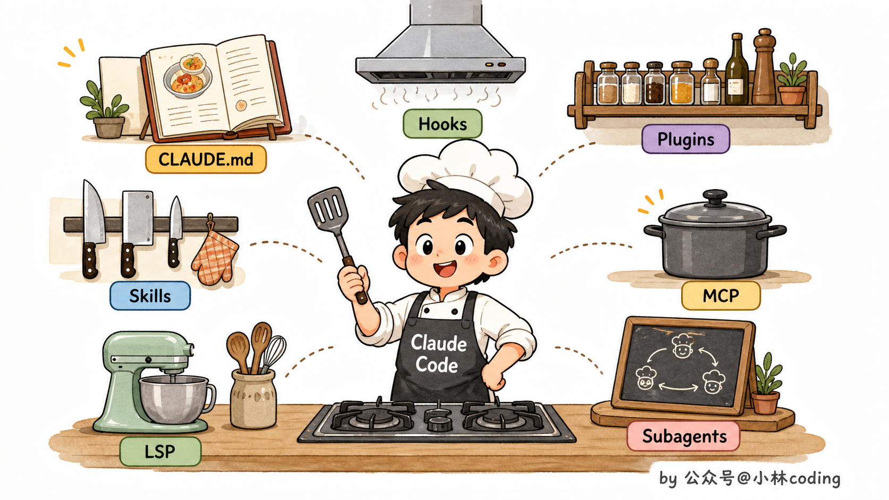
Anthropic 的 harness 一共七层，每层都建立在前一层基础上：CLAUDE.md → Hooks → Skills → Plugins → MCP，再加两个增强 LSP 和子 agent。
听着多？其实下面几个 Q 就是按官方顺序一层一层把它们拆透：
- Q2 拆 CLAUDE.md 怎么写（含 Hooks 怎么挂）
- Q3 拆 LSP 和子目录启动
- Q4 拆子 agent 怎么和主 agent 协作
- Q5 拆 Skill、Plugin、MCP 怎么打包分发给团队
- Q6 看创始人 Boris 怎么把这七样东西组合起来用
读完你就明白，用好 Claude Code 不是搞定模型选型，而是把这套 harness 一层一层搭起来。
context 爆不是模型小，是你的 harness 没搭好。
Q2： CLAUDE.md 到底写多长合适？写了 1000 行 Claude 反而变笨？
那我们就从 harness 第一层开始拆，也就是 CLAUDE.md。
这一层是大代码库下踩坑最多的一个。
Anthropic 官方答案非常具体：单文件控制在 200 行以内。
听起来是不是有点吃惊？毕竟一个项目的规范规则随便列列就上千行了。
官方的逻辑也很简单：CLAUDE.md 每次启动都被整个塞进 context，写太长就等于在跟自己抢空间。超过 200 行之后，Claude 开始忽略指令的概率会肉眼可见上升。
那大代码库下规则确实多怎么办？关键词是分层。
Anthropic 在博客里有句原话挺狠的：「根目录的 CLAUDE.md 应该只放指针和关键的坑，其他细节都会变成噪音。」
正确做法是 root 文件只放跨包通用约定（比如「生产数据库千万别动」「提 PR 前要跑 lint」），每个子目录再放自己的 CLAUDE.md 写模块细节。Claude 会自动从当前目录往上走树把沿途每个 CLAUDE.md 都加载进来。
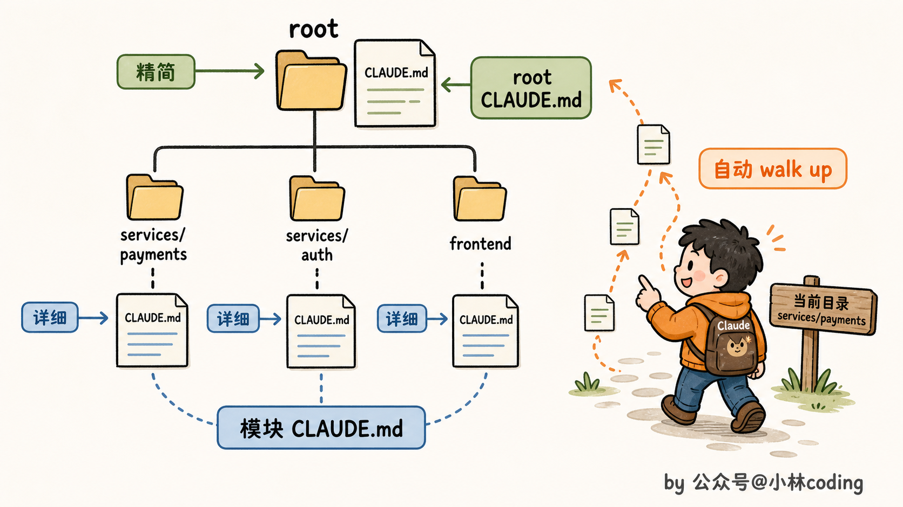
但这还不够。Claude Code 创始人 Boris 还为 CLAUDE.md 维护放过一句口号当 slogan：「Ruthlessly edit your CLAUDE.md over time」，翻译过来就是对你的 CLAUDE.md 下狠手，毫不留情地删。
怎么判断 CLAUDE.md 该不该留某一行？有个特别实用的检查法：对每一行你都问自己「如果删掉这行，Claude 还会按这条规则做事吗？」答案是「会」（常识或代码已经体现），就该删；答案是「不会」才值得留。
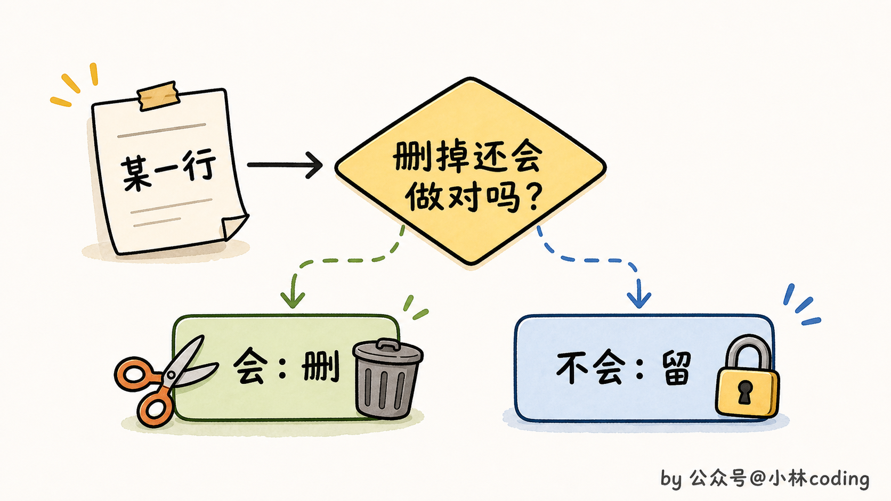
任何时候你发现 Claude 还在反复犯某个错，先别急着加新规则，先去看看 CLAUDE.md 是不是已经太长把规则淹没了。
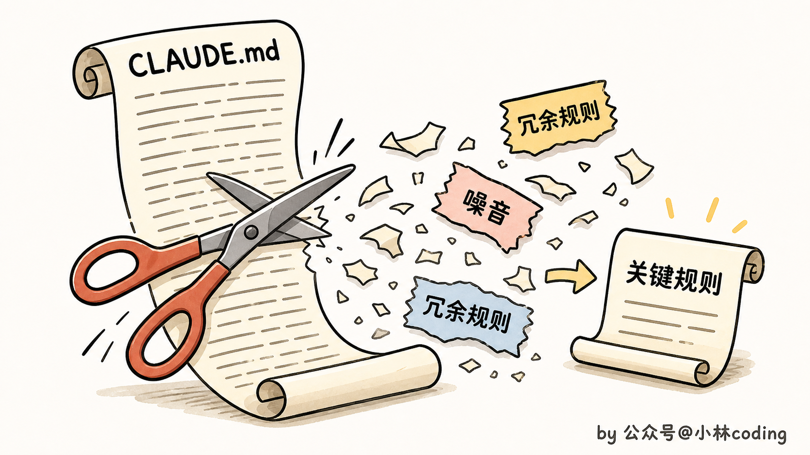
Boris 还分享过 Anthropic 内部团队怎么维护这份文件：整个 Claude Code 团队共享一份 CLAUDE.md 提交到 git，一旦发现 Claude 做错了什么就立刻加进 CLAUDE.md。这份文件在他们那里不是「写一次放着」的文档，而是持续打磨的活文件。
还有一条 Anthropic 官方建议特别容易被忽略：每 3-6 个月对你的 CLAUDE.md 做一次完整审查。
为什么？因为模型在进化。
你三个月前为了约束 Claude 写的「每次重构只改一个文件」，可能在新模型上反而变成了枷锁，新模型已经能做跨文件协调编辑了，旧规则反而把它捆住了。同样，为了弥补旧模型某个弱点写的 Hook、Skill，模型升级之后可能直接成多余负担。
说白了，模型都已经往前跑了，你的 CLAUDE.md 可能还停在三个月前。
如果你感觉 Claude Code 最近用得怎么都上不去一个台阶，先别怀疑模型，先回去看你的 CLAUDE.md 是不是过期了。
总结一下 Q2 的官方答案：单文件 200 行以内、分层加载、持续狠删、每 3-6 个月审查一次。
不过你可能会问：「我哪有时间天天盯着 CLAUDE.md 改？」
官方对这个问题也有解法，叫 Hooks。
Hooks 是 Claude Code 的事件钩子机制，在「编辑完文件之后」「会话开始之前」「工具调用之前」这些时间点上挂脚本做事。
大多数人对 hook 的认知停留在「防止 Claude 做错事」，比如挂一个 hook 自动跑 lint、自动 format。
这没毛病，但官方点出来一个反直觉的洞察：hook 真正的价值不是阻止 Claude 做错事，而是让你的整套设置自我进化。
举个例子。
挂一个 Stop hook，在每次会话结束时让它自动反思「这次 Claude 有没有什么常犯的错误？要不要写进 CLAUDE.md？」然后 hook 自己改 CLAUDE.md。
或者挂一个 Start hook，根据你当前所在子目录动态加载这个模块特有的 context，今天在 payments/ 下就自动拉支付 skill，明天换到 auth/ 下就换成认证相关。
这样一来，你的 CLAUDE.md 是被 Claude 自己持续打磨的，不再需要你手动维护。Boris 自己挂了一个 PostToolUse hook 给 Claude 写完的代码自动跑格式化，把偶尔遗漏的 10% 格式问题直接抹平。
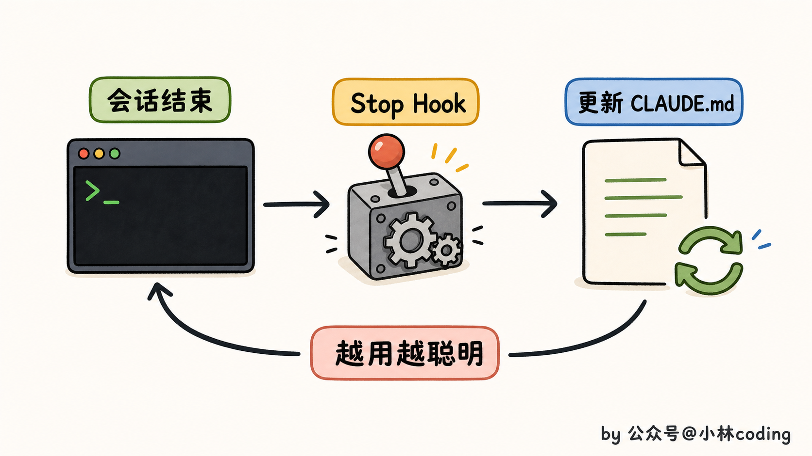
CLAUDE.md 不是写一次的文档，是一份持续打磨的活文件。
Q3：大代码库里让 Claude 找一个函数，总找错文件，怎么办？
CLAUDE.md 这层搞定之后，Claude 知道了「这个项目长啥样」。但接下来还有个更细节的问题：让它找一个具体函数，它老是找错文件。
这个问题在多语言大代码库（C/C++/Java/PHP 这种符号歧义高的语言）里特别突出。
Anthropic 官方答案是两件事：装 LSP + 在子目录里启动 Claude。
先说 LSP。
LSP 全称叫 Language Server Protocol。听着挺唬人，但其实你天天都在用：平时你在 VS Code 里点「go to definition」「find references」，背后跑的就是它。
Claude Code 接上 LSP 之后，搜代码就不再是按字符串 grep，而是按符号搜。
举个例子。你在大代码库里 grep 一个 getUser 函数，可能返回三千个匹配，前端有、后端有、测试也有。Claude 得一个个读文件判断哪个是你真要改的，光这个过程就能把 context 烧光。
但有 LSP 之后，Claude 直接问 LSP：「找跟 auth/login.ts 那个 getUser 同源的所有引用」。LSP 一口气返回精确的三个，过滤工作在 Claude 读文件之前就完成了。
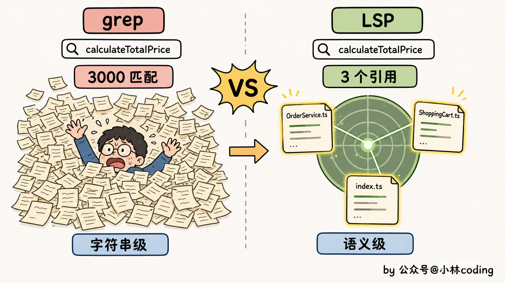
Anthropic 官方博客直接把 LSP 称作多语言大代码库下「one of the highest-value investments」，并讲了一个真实案例：有家做企业软件的公司，在全公司铺 Claude Code 之前专门先把 LSP 集成在组织级别铺开，就是为了让 C 和 C++ 这种符号歧义高得离谱的语言能跟 Claude 配合得动。
装 LSP 怎么操作？在 Claude Code 的 /plugin 里搜「lsp」，找到对应语言的 code intelligence plugin（typescript-lsp / pyright-lsp / rust-analyzer-lsp 等等）装上，再装对应的语言服务器二进制（pip 装 pyright、npm 装 typescript-language-server 之类）。整个过程不超过两分钟。
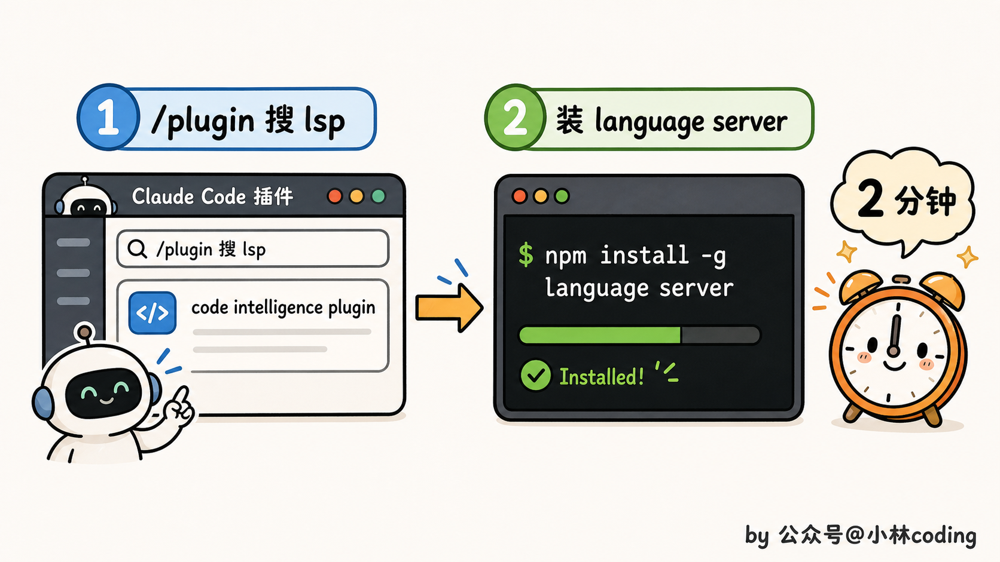
再说子目录启动这件事，这是反直觉但官方博客被反复强调的一条。
大多数人第一次用 Claude Code，习惯都是 cd 到项目根目录然后 claude。在小项目没毛病，但在大代码库里，这会让 Claude 一上来就把根目录那个超大的 CLAUDE.md 全部加载进 context，前端后端 infra 所有微服务的规则全来一遍。
官方博客原话叫「Initializing in subdirectories, not at the repo root」。
正确做法是直接在你要改的子目录启动。比如要改支付服务，就 cd services/payments 然后 claude。Claude 会自动往上走树把根目录的 CLAUDE.md 也加载进来，通用规则不丢；但优先加载 payments/ 子目录的 CLAUDE.md，context 立刻聚焦到「支付」一个领域。
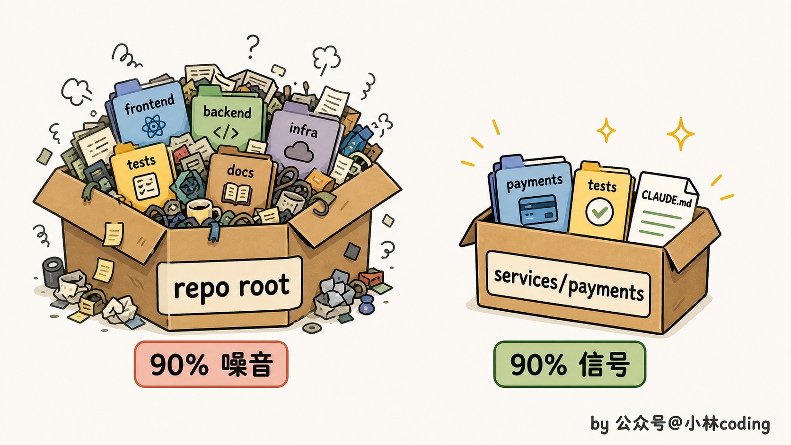
除了 LSP 和子目录启动，官方博客还提了三个小细节，配合起来效果更好：
第一，测试和 lint 命令按子目录写进 CLAUDE.md。Claude 改了支付服务里一个文件，结果它跑整个项目的测试套件，几十分钟才出结果，context 也跟着烧光。每个子目录的 CLAUDE.md 应该明确写「这块用什么命令测，怎么 lint」，让 Claude 只跑该跑的那一部分。
第二，用 .ignore 规则把生成文件、构建产物、第三方代码排除掉。把 permissions.deny 规则提交到 .claude/settings.json，整个团队就能自动共享这些排除规则，不用每个人手动配。
第三，目录结构不直观时，在根目录放一张「代码库地图」。一份简单的 markdown 文件，列出每个顶层文件夹的一句话说明就够。Claude 在动手探索之前先扫一眼这张地图，比让它瞎翻一通要快得多。
让 Claude 按符号搜代码、按子目录工作，准确率立刻翻倍。
Q4：跨几十个文件的改动，Claude 总是改一半就崩，怎么救？
Claude 知道了项目结构、也能找准代码了。这下总能干大活了吧？
还真不一定。重构、迁移、跨服务联动这种「大动作」上，Claude 经常前半段还在状态，后半段就开始忘前面、漏改、改错。这是大代码库下另一个高频翻车点。
Anthropic 官方答案：跨大量文件的改动，正确解法是把任务拆成多个会话 + 用 subagent，不是写更长的 prompt。
很多人第一反应是改 prompt、改 CLAUDE.md、加更多规则。
但 Anthropic 在博客里明说过：跨大量文件的改动，正确的解法是把任务拆成多个会话。
Boris 还把这句话翻译得更直白：「Pour your effort into the plan so Claude can one-shot the implementation」，意思是与其用一个超长 prompt 让 Claude 一次搞定所有事，不如先单独花一轮把方案敲定，再分多个会话去实现。
具体怎么做？
第一步：派 subagent 出去探索，主 agent 留着干净的 context。
大代码库下「读懂这个系统怎么工作」本身就要烧掉好几万 token。让 Claude 一边读代码一边改代码，相当于让一个人一边查资料一边写论文。
Subagent 的思路特别简单：派一个小弟去探索，让他写一份 findings 报告回来，主 agent 看完报告再动手。小弟在独立的 context 窗口里跑，读了几十个文件烧的是自己的 context，跟主 agent 没关系。他最后只把几百字摘要给主 agent。
flowchart TB
A[主 Agent 接到任务] --> B[派 Subagent 去探索]
B --> C[Subagent 读 50 个文件烧自己的 context]
C --> D[Subagent 写 200 字 findings 报告]
D --> E[主 Agent 拿到摘要]
E --> F[主 Agent 在干净 context 下动手改]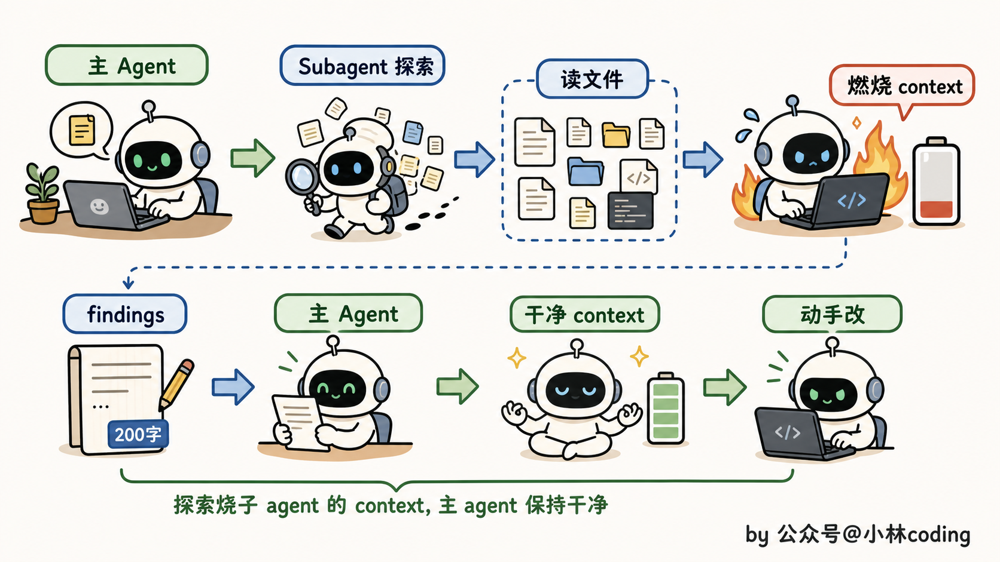
最简单的操作就是直接跟 Claude 说：「先用 subagent 调查一下我们项目里 X 是怎么实现的，写成 findings 文件，再回来动手改。」
第二步：会话拆分。
会话 1 只做探索写 plan 不动代码；会话 2 加载 plan 实现一个模块跑通测试；会话 3 实现下一个模块。每个会话都从干净 context 开始，plan 文件做桥梁串联。
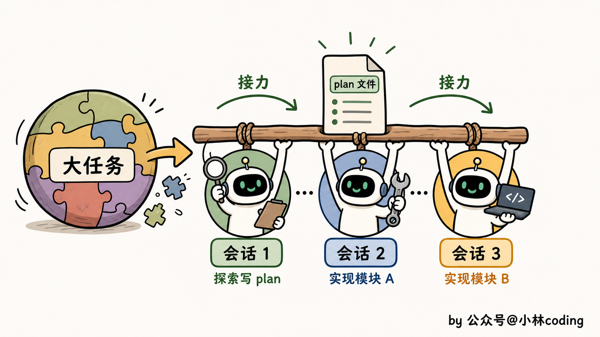
第三步：跑大型迁移用 /batch。
如果你的改动是「整个项目从一个框架迁到另一个」「把几十个文件的某种调用全部替换」这种大规模迁移，Claude Code 已经直接内置了一个专门工具叫 /batch。
用法是这样的：先用对话方式把迁移方案敲定，然后它一次性派出几十个并行 subagent，每个在独立 git worktree 里跑、自测、开 PR。
你不用守屏幕，跑完直接给你一堆 PR 等 review。
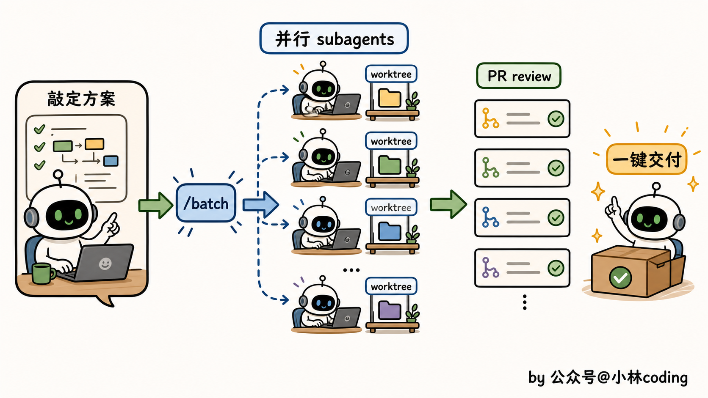
这就是创始人 Boris 本人正在用的工作流，以前要自己手撸的多 agent 编排，现在一行命令就搞定。
跨大文件改动救不回来的不是 prompt，是会话边界。
Q5：团队里只有我一个人会用 Claude Code，怎么推广？
前面 3 个 Q 解决的都是「你自己一个人怎么把 Claude Code 用顺」。但接下来这个问题就升级了：你用得飞起，旁边的同事还在用 demo 版，怎么办？
这是个组织层面的问题，也是 Anthropic 官方博客花了不少篇幅讲的一块。
Anthropic 官方答案：先把好实践做成 skill，再用 plugin 打包分发出去，再用 MCP 把团队内部系统接进来，最后得有人维护这套东西。
听着有点多？我们一步一步来。
第一步：先把高频操作做成 skill
什么是 skill？你可以理解成「针对某个具体任务的 SOP」。比如「这个项目的数据库迁移怎么做」「这个微服务上线的标准流程」，这些都是 skill 该干的事。
Skill 跟 CLAUDE.md 最大的区别在一个词：按需加载。
CLAUDE.md 每次会话都全文加载，跟你这次任务有没有关系都加载；skill 不是，它只在 Claude 判断「当前任务需要」的时候才加载，平时静静躺在仓库里不占 context。官方有个专门的词叫 progressive disclosure（渐进式披露），讲的就是这个机制。
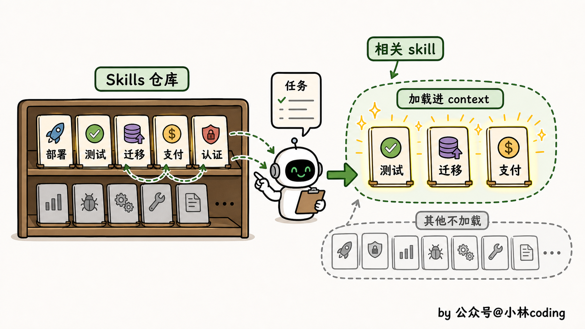
Boris 还说过一句话特别值得记下来：「如果一件事你一天做超过一次，就把它做成 skill。」一个大项目里高频操作就那么几十种，每个都做成 skill 全队共享，效率立刻是几何级提升。
skill 还可以绑定到特定路径。「支付服务部署 skill」绑定到 services/payments/，只有 Claude 在这个目录下工作时才加载，避免「改前端代码结果支付 skill 也来凑热闹」这种 context 污染。
第二步：用 plugin 把好实践打包分发
但 skill 本身还在每个人的本地，没法共享。这就引出了 plugin。
大公司里有个经典问题：好的工具配置永远只在小圈子里流传。某个高级工程师本机配置了三十个 skill、十几个 hook、五个 MCP server，他用 Claude Code 爽得飞起。但旁边的实习生啥都没配，体验就跟用了个 demo 版差不多。
Plugin 就是解决这个问题的。它本质上是一个安装包，把 skill、hook、MCP、LSP 配置打包在一起。新人入职第一天 install 一下，立刻和团队所有人有一样的 Claude Code 能力。
官方博客讲过一个特别接地气的案例：一家大型零售公司搭了个 skill 让 Claude 连内部数据分析平台，业务分析师不用切工具就能拉销售数据。这个 skill 起初只是少数人的本地配置，后来打包成 plugin 全公司铺开，整个公司业务分析效率被拉高一个档次。
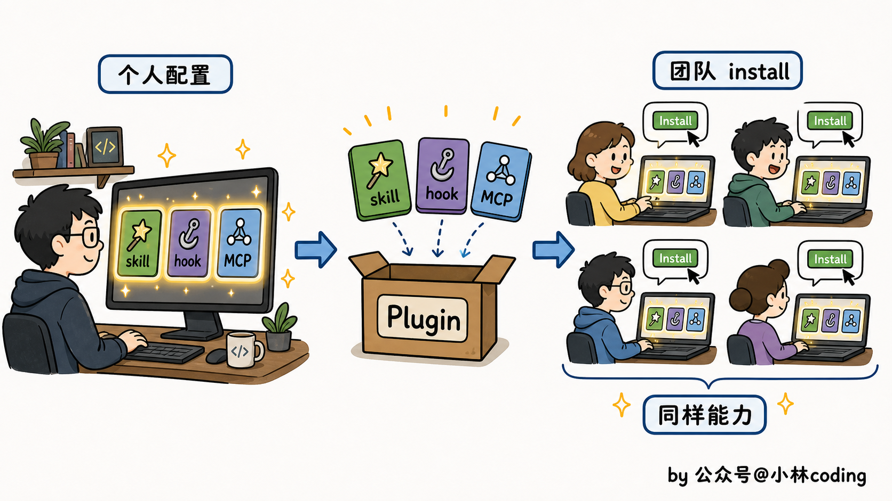
公司还可以建自己的 plugin marketplace。谁有更好的实践就更新到 marketplace 里，全公司一起受益。
第三步：用 MCP 把团队内部系统接进来
光有 skill 和 plugin 还不够。
大代码库下的工作往往不是孤立的，得跟团队的 Slack、Jira、内部 wiki、数据库、监控系统都联动。
这个连接的桥梁叫 MCP server（Model Context Protocol）。
装一个 Slack MCP，Claude 就能搜公司 Slack 消息；装一个 BigQuery MCP，它就能跑数据查询；装一个 Sentry MCP，它就能拉线上错误日志。
听着很强，但官方在这块特别提醒了一个反直觉的点：别太早上 MCP。
很多团队 CLAUDE.md 都还没写好，hook 也没挂，就着急忙慌接各种 MCP，结果反而把 context 搞得更乱。MCP 是 harness 里最后才该上的一层，前面的基础没搭好，MCP 接进来的数据就是噪音。
正确的顺序是：先把 CLAUDE.md 和 skill 打磨好 → 再用 plugin 打包分发 → 最后才上 MCP 把外部世界接进来。
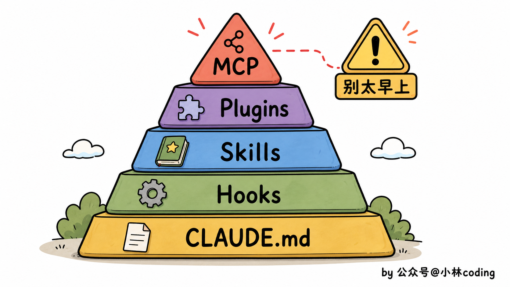
第四步：得有人负责维护
但官方还点出来一个更关键的事：光把工具堆起来不够，得有人负责维护。
Anthropic 观察到，推广最顺的组织都有一个共同点：在大面积铺开之前，会先安排一小队人（甚至一两个人）把整套基础设施搭好，然后才放开访问。
开发者第一次摸 Claude Code 就能跑通，第一印象如果是「这东西不好使」，后面要翻盘就太难了。
官方博客里点出了一个正在浮现的新角色，叫 Agent Manager，半 PM 半工程师，专门负责 plugin 分发、CLAUDE.md 规范、skill 审批这些事。
规模小一些的团队没条件设这个岗位也没关系，至少要有一个 DRI（直接责任人）把 Claude Code 的配置维护起来，有拍板权决定哪些 skill / plugin 上、哪些不上。
没有人盯着这件事，再好的 plugin 也会变成「张三两年前搭的，没人会改」的部落知识。
好实践不再是个人玩具，而是组织资产。
Q6：Boris 自己平时怎么用 Claude Code？
前面 4 个 Q 把官方答案讲完了，你可能会好奇：那 Claude Code 的创始人自己平时是怎么用的？
这一节其实是个彩蛋，但读完你会发现，里面藏着创始人对 Claude Code 用法的全部理解。
Boris Cherny 是 Claude Code 的创始人，他分享过一段让我看完直接破防的话：
「我同时在终端里跑 5 个 Claude，再加 5 到 10 个跑在 claude.ai/code 上，并行处理不同任务。」
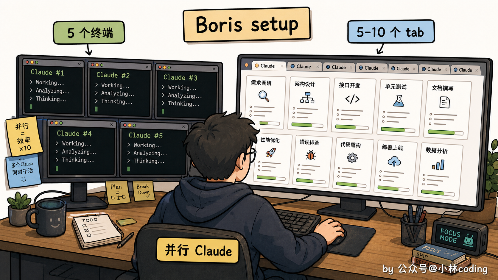
听着是不是有点不可思议？
但他的这套 setup 其实很值得拆解，里面藏着创始人对 Claude Code 用法的全部理解：
第一，他不用 --dangerously-skip-permissions。他明确说过自己用 /permissions 命令把常用的安全命令预先加白名单，避免一遍遍点确认，但又不放弃权限审计。
第二，他几乎所有复杂任务都从 Plan Mode 开始。先跟 Claude 把方案敲定，再切到 auto-accept 模式让它一发命中地把代码写出来。
第三，他挂了一个 PostToolUse hook 给 Claude 写完的代码自动跑格式化，把 Claude 偶尔遗漏的 10% 格式问题直接抹平，避免后面 CI 挂掉。
第四，他把每天做超过一次的事都做成了 slash command 或 skill。Boris 有句名言：「如果一件事你一天做超过一次，就把它做成 skill。」他自己有个 /commit-push-pr 命令，一天用几十次，避免重复 prompt。
第五，他给整个 Claude Code 团队共享一份 CLAUDE.md，提交到 git。一旦发现 Claude 做错了什么就立刻加进去，是一份持续打磨的活文件。
把这 5 件事串起来看你会发现：创始人对 Claude Code 的态度不是「装上就用」，而是把它当成一个会进化的工作伙伴，每天都在喂它新规则、新工具、新工作流。
这才是大代码库下用好 Claude Code 的底层心态。
创始人对 Claude Code 的态度，不是「装上就用」，而是「每天打磨它」。
Q7：什么样的项目其实不适合用 Claude Code？
讲了这么多 Claude Code 在大代码库里有多能打，最后还得给你泼一盆冷水：它也不是万能药。
这是最后一个问题，也是 Anthropic 官方博客说得最坦诚的一块。
官方原话是这样的：「Claude Code 是围绕传统软件工程环境设计的，假设工程师是代码库的主要贡献者，仓库用 Git，代码遵循标准目录结构。」
也就是说，下面这几种场景 Claude Code 用起来会比较吃力：
- 游戏引擎那种大量二进制资源的项目：Claude 没法读你的 3D 模型、贴图、音频
- 用非常规版本控制系统的项目：比如老牌的 Perforce / Subversion / 自研 VCS，需要额外配置才能跑顺
- 非工程师为主贡献的代码库：比如产品经理改产品文档、设计师改 Figma 配置文件，这些场景 Claude Code 的 harness 不太对得上
官方在博客结尾建议这种非常规场景需要更多定制化配置，他们的 Applied AI 团队会专门跟客户对接。换句话说，Claude Code 当下最擅长的还是「Git + 工程师 + 标准目录」这个最大公约数。
如果你的项目正好踩在这几个非常规场景上，别死磕，找官方支持渠道才是正解。
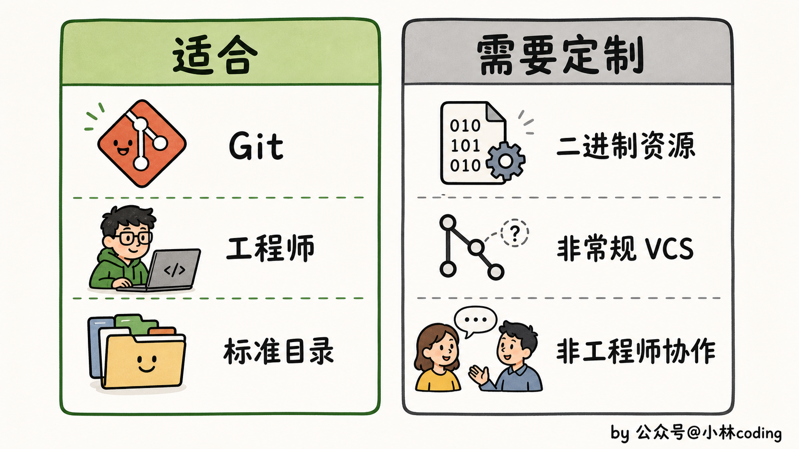
Claude Code 不是万能药，最擅长的是「Git + 工程师 + 标准目录」这个最大公约数。
最后
到这里，7 个问题的官方答案就说完了，我把这 7 个答案浓缩成 3 句话送你：
- 第一，Claude Code 在大代码库不是「装上就能用」，是要在 harness（外围基建）上花一次性功夫的。
- 第二，最高 ROI 的三个动作是：CLAUDE.md 砍到 200 行以内 + 在子目录启动 Claude + 装 LSP。这三件事做完，体验立刻不一样。
- 第三，跨大文件改动、团队推广、CLAUDE.md 维护这些大代码库下的硬骨头，官方都给了具体答案，Boris 自己也在用，你照抄就行。
现在你可以打开你公司的项目，对照这 7 个问题逐一过一遍，看看哪几个你已经做对了，哪几个还差一截。
参考资料
- Anthropic 博客《How Claude Code works in large codebases: Best practices and where to start》：https://claude.com/blog/how-claude-code-works-in-large-codebases-best-practices-and-where-to-start